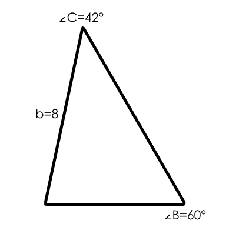

The Law of Sines are based on right triangle relationships that can be created with the height of a triangle.
It allows us to calculate the values of sides and angles without the use of a right angle.
This formula is commonly used to find the Sides of the Triangle; it is used for solving problems given 2 angles and 1 side.
There is also another version of the formula used to find the angles.
∠B=60°, ∠C=42°, b=8

©2024 by Christian Robert L. Daquipil